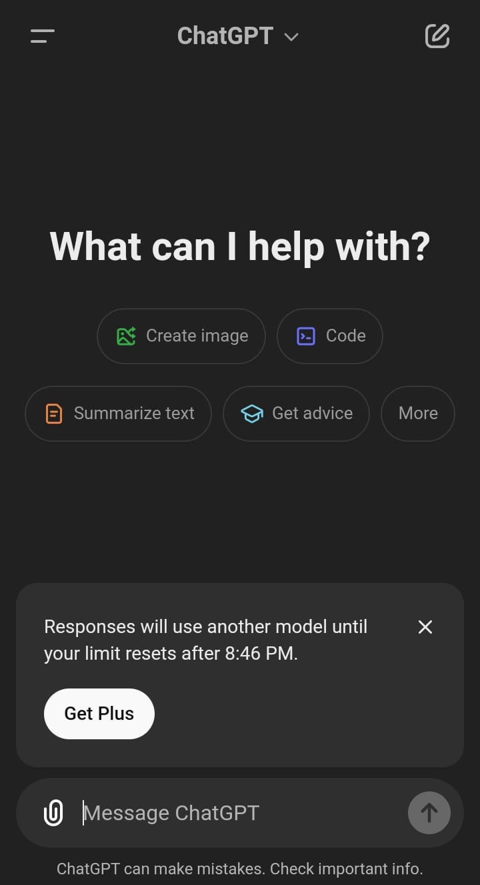

Chat GPT is the most popular AI website in history. Ai was became more popular due to Chat GPT, it was a great development in Ai. Chat GPT help us alot in our daily routine, thats why it became more popular. Tasks that used to take hours to complete are now being done very quickly through ChatGPT.
ChatGPT is mostly used by students because it simplifies the understanding of their assignments and lectures. Through ChatGPT, they can easily comprehend their extensive and difficult lectures, and most questions can be solved using it. At first Chat GPT was very simple but after some time it become more powerful. Users can access many features that are not available in the free version. ChatGPT serves as a texting tool, offering numerous features through text interactions.
Founded by Sam Altman in 2015.
ChatGPT is more than just a chatbot—it can be a tool that transforms the way you work, learn, and create in daily life. Here’s how you can truly benefit from it:
Got too many tasks on your plate? ChatGPT can help you streamline your workflow by drafting emails, summarizing documents, or writing reports for you. It saves you time and lets you focus on what really matters in your life.
Whether you're a student or just curious, ChatGPT is like having a tutor on call. From solving math problems to explaining difficult concepts, it makes learning accessible and easy for you.
Struggling with writer’s block? ChatGPT can generate ideas, suggest storylines, or help refine your writing. Whether it’s for a poem, a blog post, or a social media caption, it’s like brainstorming with a creative partner.
Businesses are using ChatGPT to answer customer questions, resolve issues, and offer support 24/7. It’s a great way to enhance your customer experience while cutting down on costs.
Need to compare options or understand complex topics? ChatGPT can provide insights, analyze scenarios, and help you weigh the pros and cons.
ChatGPT isn’t just for tech enthusiasts—it’s making waves in various fields. Here are some areas where it’s most commonly used:
Teachers and students are using ChatGPT to create lesson plans, explain tough topics, and generate study materials. It’s like having an extra hand in the classroom or at home.
Bloggers, marketers, and social media managers love ChatGPT for its ability to produce engaging content. It’s a go-to tool for anyone in the digital world.
Many companies use ChatGPT as a virtual assistant to respond to customer inquiries and solve problems. It’s quick, accurate, and always available—making it an excellent addition to any support team.
Developers turn to ChatGPT for help with coding, debugging, and understanding technical concepts. It’s a lifesaver for beginners and a productivity booster for pros.
In the medical field, ChatGPT helps patients with basic information and assists doctors with research summaries and paperwork.
Whether it’s managing budgets, explaining investments, or simplifying financial jargon, ChatGPT is helping people navigate the world of money.
Getting great results from ChatGPT isn’t magic—it’s about knowing how to ask the right questions. Here’s how you can improve your prompts:
By mastering the art of prompts, you’ll unlock the full potential of ChatGPT and get exactly what you need, every time.
ChatGPT is more than just a chatbot—it can be a tool that transforms the way you work, learn, and create in daily life. Here’s how you can truly benefit from it:
Got too many tasks on your plate? ChatGPT can help you streamline your workflow by drafting emails, summarizing documents, or writing reports for you. It saves you time and lets you focus on what really matters in your life.
Whether you're a student or just curious, ChatGPT is like having a tutor on call. From solving math problems to explaining difficult concepts, it makes learning accessible and easy for you.
Struggling with writer’s block? ChatGPT can generate ideas, suggest storylines, or help refine your writing. Whether it’s for a poem, a blog post, or a social media caption, it’s like brainstorming with a creative partner.
Businesses are using ChatGPT to answer customer questions, resolve issues, and offer support 24/7. It’s a great way to enhance your customer experience while cutting down on costs.
Need to compare options or understand complex topics? ChatGPT can provide insights, analyze scenarios, and help you weigh the pros and cons.
ChatGPT isn’t just for tech enthusiasts—it’s making waves in various fields. Here are some areas where it’s most commonly used:
Teachers and students are using ChatGPT to create lesson plans, explain tough topics, and generate study materials. It’s like having an extra hand in the classroom or at home.
Bloggers, marketers, and social media managers love ChatGPT for its ability to produce engaging content. It’s a go-to tool for anyone in the digital world.
Many companies use ChatGPT as a virtual assistant to respond to customer inquiries and solve problems. It’s quick, accurate, and always available—making it an excellent addition to any support team.
Developers turn to ChatGPT for help with coding, debugging, and understanding technical concepts. It’s a lifesaver for beginners and a productivity booster for pros.
In the medical field, ChatGPT helps patients with basic information and assists doctors with research summaries and paperwork.
Whether it’s managing budgets, explaining investments, or simplifying financial jargon, ChatGPT is helping people navigate the world of money.
Getting great results from ChatGPT isn’t magic—it’s about knowing how to ask the right questions. Here’s how you can improve your prompts:
By mastering the art of prompts, you’ll unlock the full potential of ChatGPT and get exactly what you need every time.